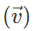

Кинематика
Раздел кинематики отвечает на вопросы о том, как именно происходит механическое движение тела.
Механическое движение
Механическое движение — это перемещение тела с течением времени и относительно других объектов в пространстве.
Для расчета этих изменений понадобится система отсчета, которая состоит из:
- объекта, относительно которого будет происходить отсчет движения;
- системы координат, в которой находится объект отсчета;
- часов (для измерения времени).
В системе отсчета метр является единицей длины, а секунда — единицей времени.
Другими важными определениями в кинематике являются:
1. Материальная точка — это объект, размеры которого можно не учитывать в расчетах.
2. Траектория движения тела (линия, по которой движется объект).
3. Путь, пройденный телом (определенный участок траектории, пройденный объектом за определенное время).
Существует 2 вида движения согласно траектории:
- прямое;
- криволинейное.
Поступательное и вращательное движение твердого тела
В кинематике выделяют два вида движения:
- поступательное;
- вращательное.
Поступательное движение — это движение твердого тела, при котором все его точки проходят одну и ту же траекторию и в любой момент времени обладают одинаковыми по направлению и величине векторами скорости и ускорения, синхронно меняющихся для любой точки объекта.
Вращательное движение — это вид механического движения, при котором материальное тело проходит траекторию окружности. При этом все точки тела описывают окружности, которые находятся в параллельных плоскостях. Центры всех окружностей находятся на одной прямой, которая перпендикулярна к плоскостям окружностей (называется осью вращения).
Кинематические уравнения движения
Определение местоположения материальной точки в пространстве можно осуществить двумя способами:
- учитывая зависимость координат от времени;
- учитывая зависимость от времени радиус-вектора.
Эту зависимости можно представить в виде кинематических уравнений движения:
Нулевой вектор на данной иллюстрации — это радиус-вектор положения точки в начальный момент времени.
Кинематические характеристики (скорость, ускорение)
Основными кинематическими характеристиками являются:
- скорость;
- ускорение.
Скорость — это векторная величина, которая характеризует направление и быстроту движения.
Среднюю скорость можно вычислить по формуле: